NHF szépségverseny 2013
A 2013-as évfolyam · 2015.02.18 · Frissítve: 2015.02.15
A 2013-as nagy házik: a beküldött szép megoldások galériája a készítők által küldött leírásokkal.
1Bácsi Gábor: Tabulátor Rozália
A projectemet a kalandjátékok ihlették a számítógépes játékok klasszikus időszakából. Az irányításhoz csak az egeret kell használni. Lehet különböző helyszíneket felfedezni, tárgyakat felvenni, ezeket használni. A játékomat SDL 1.2 segítségével valósítottam meg, mely lehetővé tette a grafikai megjelenítést. A programban lehet továbbá a játékállást menteni és betölteni három különböző slotból, valamint némi extra tartalom is aktiválható a figyelmes játékosoknak. A történet a jövőben játszódik, egy lánynak kell segíteni bejutni a vizsgájára, ugyanis kisebb kellemetlenség érte reggel: elromlott a teleporter. Ezt kell segíteni megjavítani. A cél, hogy Tabulátor Rozália eljusson a vizsga helyszínére.
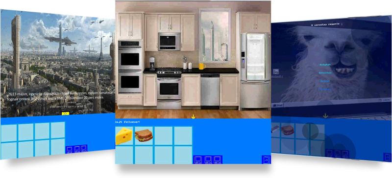2Czémán Barnabás: Minesweeper2D
Az én házim egy hagyományos aknakereső új köntösbe öltöztetve. A játék SDL 1.2-ben készült és kereszt platformos. A Klasszikus játék-hoz kapcsolódik egy grafikus menü és egy dicsőséglista bináris rendezőfával, valamint egy megkezdett játékot később folytatni is lehet.
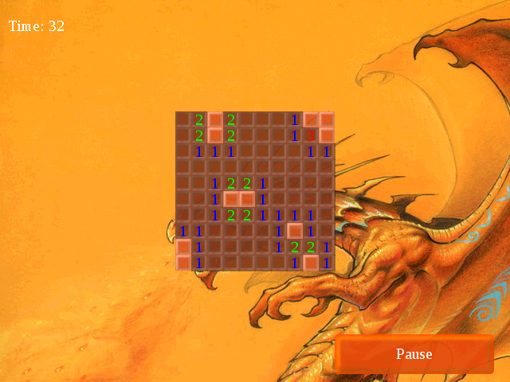3Dargó Zsolt: Snake
A program a jól ismert Snake nevű játékot valósítja meg, melynek elkészítéséhez SDL-t használtam. A játék tartalmaz egy- és kétjátékos módot is. A játék célja a szokásos: az eledeleket felszedve minél nagyobbra növekedni anélkül, hogy a falnak, önmagának vagy esetleg a másik kígyónak ütközne a kígyó. Egyjátékos módban, megfelelő pontszám elérése esetén a játékos felkerülhet a nehézségi szintnek megfelelő dicsőséglistára. Kétjátékos mód esetén a játékosok a kurzormozgató nyilakkal és a WASD billentyűkkel irányíthatják a kígyójukat.
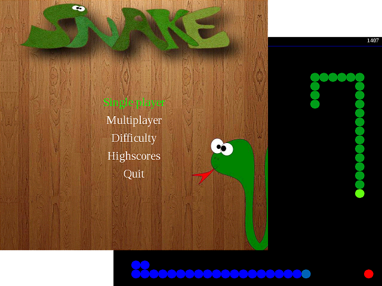4Enesei Lilla: Kockafoglaló
A program egy játék. A lényege, hogy több négyzetet foglaljon el a játékos, mint a gépi ellenfele. A területeket elfoglalni a négyzetek körbe kerítésével lehetséges. A játékot az egérrel irányítva lehet játszani.
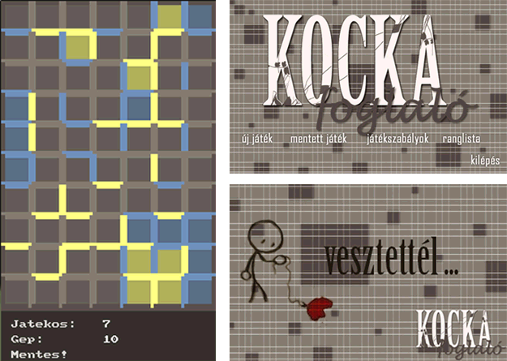5Engi Erik: Siva Particle System
A rendszer olyan magas szintű függvényeket biztosít, melyekkel könnyedén hozhatunk létre mozgó részecske rendszereket (animációkat). Létre lehet hozni kép alapján is. A részecskék képesek meghalni és szaporodni is. A paraméterek változtatásával magunk is létrehozhatunk új más viselkedésű és stílusú részecske rendszereket.
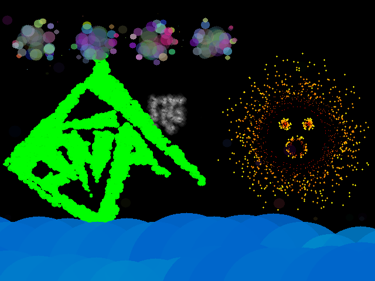6Ferenczi Csongor: Pacman
A jól ismert PacMan újragondolt változata. PacPontokat kell enni - ezzel pontot szerezve - és menekülni kell a szellem elől. A játéknak vége van ha minden pontot megettünk, vagy elkapott a szellem. A játék végével a megszerzett ponthoz nevet rendelhetünk, ami így bekerülhet a highscore-ba. Az egész játék alatt kikapcsolható zene hallható. Felhasználóbarát menüvel rendelkezik. Irányítani a WSAD illetve a nyilak segítségével lehet. Két cheat került beépítésre, az egyik a konami code, a másikat pedig tessék megtalálni.
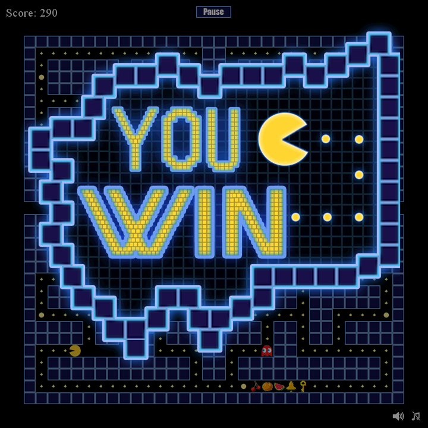7Horváth Ágota: Reversi
A nagyházim egy hagyományos reversi játék, amit a gép ellen lehet játszani. A könnyebb átláthatóság érdekében a gép egy piros ponttal jelzi a következő lépését, mielőtt letenné a korongot. A játék felfüggeszthető a menü gombra kattintva, majd később ugyanonnan folytatható. Miután vége a játéknak, elindul a lépések visszajátszása.
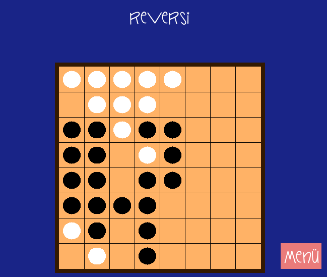8Kálmán Tibor: Bomberman
Bomberman, PONG óta az egyik legjobb játék arra, hogy két ember összemérje képességeit. A két játékos egymást próbálja meg felrobbantani jól elhelyezett bombákkal. 8 pályán mérkőzhet meg a két játékos, miközben szabad felhasználású spriteokban gyönyörködhetnek. Akit untat a falak robbantgatása, az választhat CQB pályát is, ahol az első pillanattól kezdve folyik a harc.
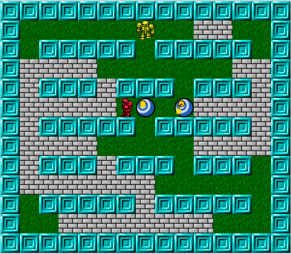9Kinyik Bence: Töltés játék
A program egy olyan játék, ahol a felhasználó feladata, hogy eljuttasson egy pozitív töltést a célba. A töltést egy ágyúból lehet kilőni, ami a pálya bal szélén található. Az ágyú szöge állítható. A pályán különböző akadályok és töltések nehezítik a feladatot. A játékos szintén tud töltéseket elhelyezni a pályán, melyek segítségével célba tudja juttatni a töltést. A piros töltések a pozitívak, míg a kékek a negatívak. Mivel a kilőtt töltés pozitív, a kékek vonzzák és a pirosak taszítják. A program kiírja egy fájlba, hogy melyik pályát hány lövésből sikerült eltalálni, és azokat be is tudja olvasni.
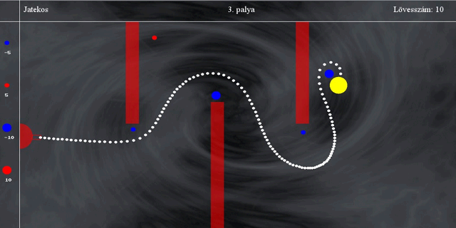10Kiss Bence: Snake
Az általam készített kígyós játék SDL-lel készült, a hagyományos kígyós játék minden szabályát betartja. Menüvezérelt, ahonnan a felhasználó kiválaszthatja, hogy egy vagy két játékos módban szeretne játszani, megtekintheti a dicsőséglistát, beállíthatja, hogy fallal vagy fal nélkül szeretne játszani, illetve kiléphet a programból. Játék közben a program végig írja a kígyó(k) pontszámát, majd ha véget ért a játék, akkor fájlba írja az eredményt. Ebből a fájlból a dicsőséglista később megjeleníti a 10 legjobb eredményt.
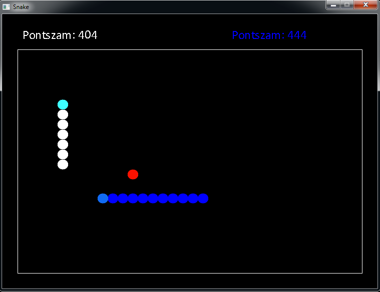11Khudari Számer: Gorilla
A játék lényege, hogy annyi banánt gyűjtsünk össze a gorillával a megadott idő alatt (2 vagy 3 perc), amennyit csak lehet. Néha futni is lehet a shift gombot nyomva, és dicsőséglistát is mutat a program.
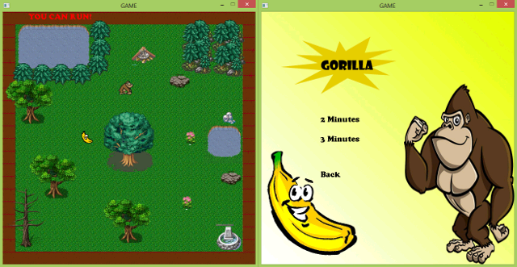12Koncz Kristóf: Brick Breaker
A játékban téglákat kell leütni egy pattogó golyóval, amit a képernyő alján található ütővel lehet irányítani, és a pályán tartani. A téglákból véletlenszerűen extrák esnek ki, ezek az ütővel elkapva aktiválhatók. Az extrák a következők lehetnek: gyorsabb/lassabb golyó, szélesebb/keskenyebb ütő, plusz/mínusz élet. Az összes téglát leütve léphetünk a következő pályára. A játékhoz készítettem egy pályaszerkesztőt is, amivel egyszerűen lehet bővíteni a játékot.
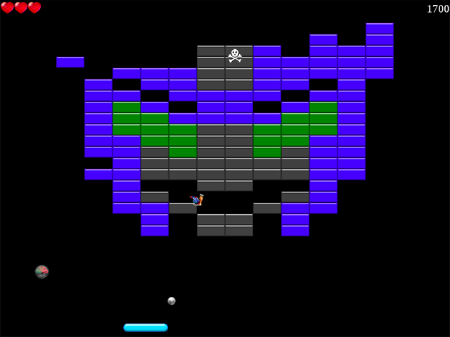13Kovács Artúr: Az Ütközet Városa
Az én programom egy régi, Battle Citynek nevezett konzolos játékot utánoz le többé-kevésbé. Alapvetően a játék célja, hogy legyőzzük az ellenséges tankokat, miközben a képernyő alján, középen látható objektumot is megvédjük. Az én verzióm több hasonlóságot is mutat az eredetivel, többek között a pályát alkotó elemek és funkciójuk megegyezik (bár a téglafal kicsit másképp omlik). Emellett a legelső pálya tökéletes mása az ötletet adó játék legelső pályájának. Gondolom ez könnyen kitalálható, de a képen látható pálya nem szerepelt az eredetiben :) A mellékelt képen a három fajta ellenség közül a kettes (gyors) és a hármas (erős) szintűek láthatók.
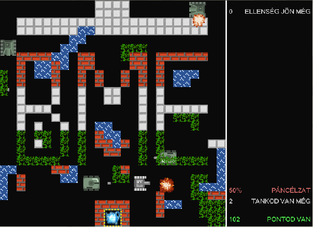14Kovács Gergely: Atomix
A játékos feladata a jobb felső sarokban látható molekula kirakása. Egyszerre egy atomot mozgathat és az addig halad, amíg akadályba nem ütközik. Az irányítás egérrel és billentyűzettel történik. Minél kevesebb lépésből oldja meg a játékos a pályákat, annál több pontot kap.
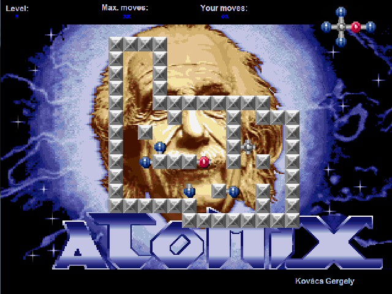15Kővári András: Akasztófa
A program a jól ismert Akasztófa játék SDL grafikát használó megvalósítása. A játékos által meghatározott hosszúságú véletlenszerűen kiválasztott szót kell kitalálni. Minden rossz tipp után eggyel kevesebb lehetőség lesz, a játék akkor ér véget, ha elfogytak a tippelési lehetőségek, vagy sikerült kitalálni. A szavak listája tetszőlegesen bővíthető, illetve törölni is lehet belőle, vagy akár az egész lecserélhető – például egy másik nyelvű listára.

16Magyar Gábor: Amőba
Amőba játék elmés mesterséges intelligenciával, menthető-betölthető játékállással, és egy lenyűgöző, részecskerendszerrel a főmenü hátterében! Érdekesség: a betűtípuson kívül nem tartalmaz adatfájlokat, minden animáció algoritmikusan generált!
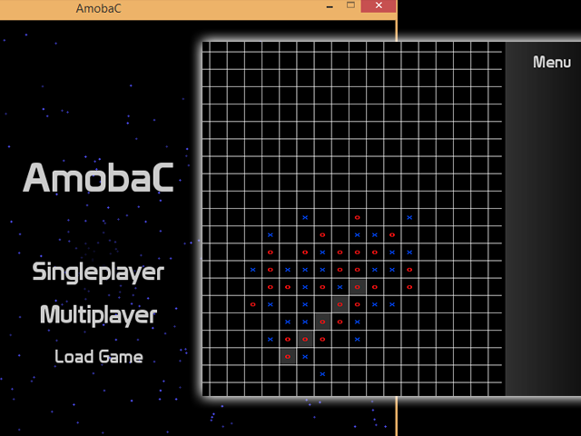17Nyéki Hunor: Amőba
A programom sima amőba játék, nem az egyszerű 3x3-as, hanem az 5-öt egymás mellé kirakós változata, gép ellen játszható. A mezőket, X-eket és O-kat Blenderben készítettem.
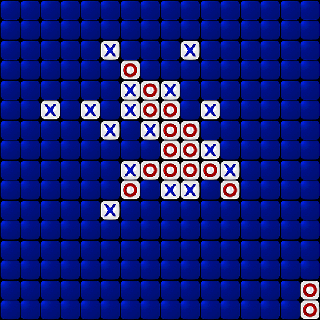